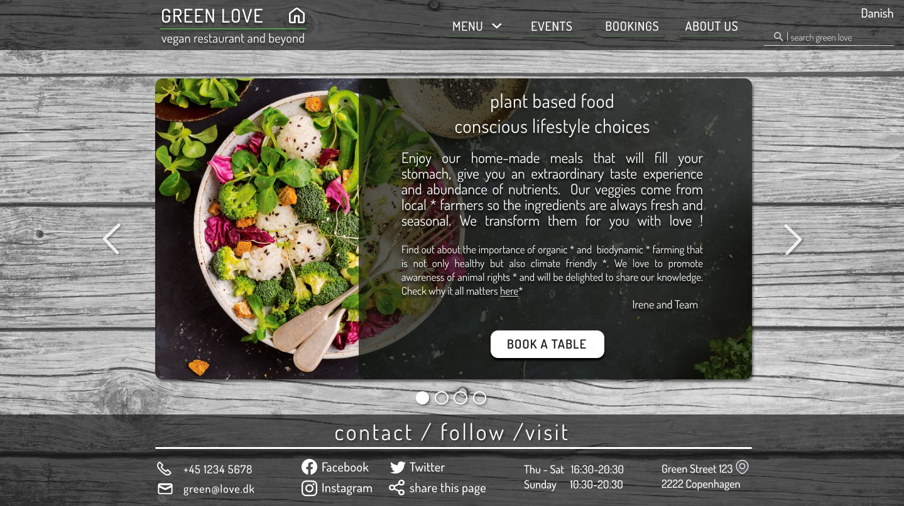

VIEW PROJECT
UX/UI audit to find pain points and redesign accordingly
/ UXR, stakeholder's interview; visual design, content writing, testing, wireframes, prototype
/ Figma, Miro, Whimsical, pen + paper

UX/UI for Hack-Your-Future/Cph coding school students
/ mentoring, visual design, content writing, prototype, cross-functional team, agile
/ Figma, Jira, GitHub, HTML, CSS, JavaScript, React.js

UX/UI design for KAOSPILOT Toolbox
/ UCD, IxD, UXR, stakeholder's interview, visual design, testing, wireframes, prototype
/ Figma, Jira, GitHub, HTML, CSS, JavaScript, React.js